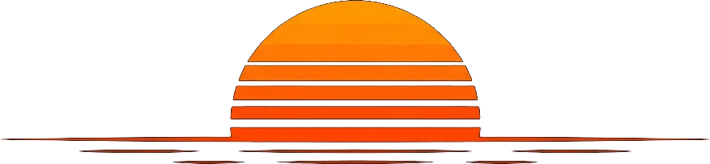
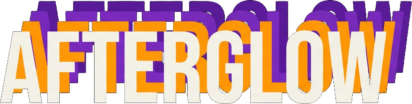
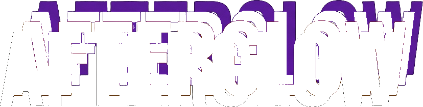
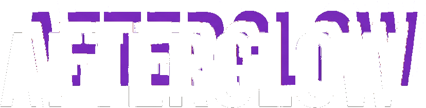
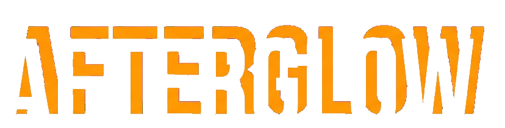

400 THz · CHILL
520
650
790
ULTRAVIOLET · 950 THz
400 THz
SEARCHING
ELECTRONIC ANESTHESIA PRESENTS






Out of
A
l
i
g
n
m
e
n
t
TAP TO TUNE IN
◆ Brochure
Credits
Best with headphones
Turn your phone sideways